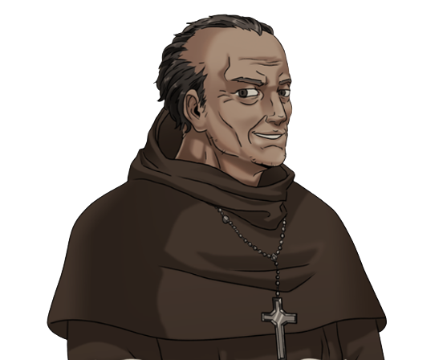

| CHARACTERS |
DESCRIPTION |
THE PROTAGONISTS |
|
Juan Crisostomo Ibarra y Magsalin |
- He is average in height, with brown skin and rosy cheeks.
- He is, not only the son of Don Rafael Ibarra and the main protagonist of Noli Me Tangere, but also a rather wealthy, charismatic, earnest, and idealistic yet humble young man with a mix of Spanish and Filipino ancestry.
- Recently returned to the Philippines after spending 7 years abroad in Europe to pursue his education in politics, science, and philosophy.
- Crisostomo Ibarra is a reflection of Jose Rizal and represents those who are wealthy and privileged, as well as the dreams and ambitions of the people who look for a means of change during the Spanish colonization era and the modern-day world.
|
|
Maria Clara de los Santos y Alba |
- She is a pure soul, a graceful and demure young woman with downcasted eyes and beautiful long black hair.
- Maria Clara, the alleged daughter of Kapitan Tiago and Donya Pia Alba, is the primary female character in this novel, as well as Ibarra's childhood friend and fiancée.
- She is inspired by Leanor Rivera and is the epitome of the purity and innocence, which could easily be used and manipulated, of a sheltered native Filipina woman during the time; she embodies, not only the Filipino women who were oppressed and abused by the Spaniards, but by the innocent who are blinded and led by lies.
|
THE ANTAGONISTS |
|
Padre Damaso |
- He is an old, fat, ugly, grey-haired Spanish friar living in the Philippines.
- Aside from being one of the prominent antagonists, he is the Franciscan and curate of the parish church in San Diego, until he was replaced by a younger friar; known to be talkative, arrogant, shamelessly corrupt, and abusive, most especially to the Filipinos.
- He is said to be Maria Clara's godfather but was revealed to be her biological father, as a result of her raping Maria's mother, Donya Pia Alba.
- He represents those in power who choose to harm and abuse those who are less fortunate instead of doing good; symbolizing the people who are in the upper class of society and uses power to manipulate, degrade and, most especially, to gain power at the cost of the lives of others, in this case, the Filipinos.
|
|  |
Padre Salvi |
- A man with a sickly and weak physique who is often seen as "meek" and "weak" yet is secretly conniving and cunning.
- Padre Salvi, another one of our main antagonists, is the new Franciscan and curate of the parish church in San Diego after replacing Padre Damaso. Unlike other priests, he refrains from frequently beating noncompliant townspeople, though he applies excruciating might on the rare occasions he does resort to violence, yet mostly reprimands others, even if they had done nothing wrong.
- Similar to Padre Damaso, he represents those who use power to harm and manipulate the vulnerable. Although, he also symbolizes those who act and put up a facade to manipulate those around him.
|
SUPPORTING CHARACTERS |
|
Don "Kapitan Tiago" Santíago de los Santos |
- He is a relatively short man with round eyes and light brownish skin, he is described to look younger than his actual age.
- He is, first introduced to us a the "father" of Maria Clara, a wealthy Filipino businessman and the cabeza de barangay of the town of San Diego; used and manipulated by the Spanish priests, notably Padre Damaso, to follow what the church says.
- Kapitan Tiago, not only represents those rich native-born Filipinos who are privileged and usually blinded by their power and fame, but also those who inadvertently harm others by becoming a puppet of those in higher power, such as the Spaniards.
|
|
Don Rafael Ibarra |
- Not much is known about him but, he is the father of Crisostomo Ibarra and, prior to his death, the wealthiest businessman in San Diego yet, despite his wealth, is virtuous and generous.
- Unlike those in wealth, he is generous and chooses to give to those vulnerable and in need; he represents those
|
 |
Isabel "Tiya Isabel" de los Santos |
- Similarly, not much is known about her, as she is one of the minor characters of the story. She is the cousin of Kapitan Tiago, as well as the aunt and caretaker of Maria Clara after her mother had passed away due to an untimely death. It is evident throughout the story that, despite only being her aunt, she treats and thinks Maria Clara as her own child.
- She represents those who have suffered, been affected, and harmed by other yet choose to remain silent and abide to orders, even at the cost of themselves and others.
|
|
Elias |
- A rather tall and robust man, first introduced to us as the boatman during Ibarra's fishing trip, with sharp, defined features.
- Elias, despite being a supporting character, plays a pivotal and important role in the story, most importantly in the life of Crisostomo Ibarra; saving him multiple times throughout the story until his untimely demise. He is brave, assertive and has great love for his people and country; has strong ideals and beliefs, one of which is that everyone, rich or poor, deserves equal rights and treatment.
- He, who is said to be a reflection of Andres Bonifacio, is those who are oppressed and rejected by the system but are still strong and determined to speak even though silenced by those in power. Elias embodies a torch, a beacon of hope, a fire that gives light to the Filipinos of the past and now, he is a reminder that we should not lose hope and continue to fight for change.
|
|
Sisa |
- She is brown in color, has clean and pure complexion, with plump pale and sunken cheeks.
- Sisa is a mother of two children, Basilio and Crispin, who she considers as her only treasure, and the wife of an addicted gambler and abusive man, Pedro. She came from a rich family yet chose love, ultimately resulting in the situation she is in.
- She embodies a loving and protective mother who, time and time again, experienced abuse, pain, and hardships from those who are considered higher than her, when all she wants to do is keep her children safe in her arms. She symbolizes our motherland, the Philippines, and the people who became shunned, outcasted, marginalized and oppressed.
|
|
Basilio |
- A young 10-year-old sacristan and eldest son of Sisa who, somehow, continues to stay hopeful and optimistic in spite of the hardships he faced, such as the lost of his younger brother and the descent into madness of his mother.
|
|
Crispin |
- Crispin, the younger between the two brothers, is an 8-year-old sacristan who, unfortunately, met his demise early on; first being accused of stealing 32 pesos by the sacristan mayor who, later on, killed him, as ordered by Padre Damaso.
- Crispin, as well as Basilio, represents the innocent who are wrongfully accused of actions they did not commit. They embody the youth, who simply wants to learn and live in a better future yet suffer from the injustice under the hands of those in power, thus being silenced to death.
|
|
Don "Pilosopo Tasyo" Anastacio |
- Pilosopo Tasyo, who is said to be inspired by Paciano Mercado, Rizal's older brother, is an old man who previously studied philosophy in the school in San Diego. He serves as an adviser for both Don Rafael and his son, Crisostomo.
- He represents those who once embraced and tolerated the injustice in the world but eventually became disenchanted once they opened their eyes and learnt the truth; while seeking to learn more, the more knowledge they gain, the more insane and different they're seen.
|
|
Donya Victorina de Espadaña |
- She is a woman who mimics the European women by wearing the same outfits, styling her hair, and speaking the same language, in this case, Spanish.
- Donya Victorina is a perfect example of the colonial mentality; she has a distorted view of her own identity and havily believes that native and indigenous is inferior compared to anything foreign.
|
|
Don Tiburcio de Espadaña |
- He is the hen-pecked husband of Donya Victorina and was previously a soldier who then became a doctor due to circumstances, resulting from battles and such.
- Don Tiburcio represents the, while low ranking, Spaniards who wreak havoc against others, notably the Filipinos.
|
|
Donya Consolacion |
- A laundry woman before, she married an aleperes and soon became cruel; she started speaking Spanish as opposed to her native language, wikang Tagalog.
- Similarly to Donya Victorina, she represents those who believe that anything native and indigenous is inferior. She embodies those, in this case Filipinos, who aren't proud and ashamed of their race and nationality.
|
|
Alperes |
- He is the head of the civil guards and husband of Donya Consolacion, as a result, he is said to be unlucky for having to marry her.
- He is simply a representation of those who are in power who judge and harm others.
|